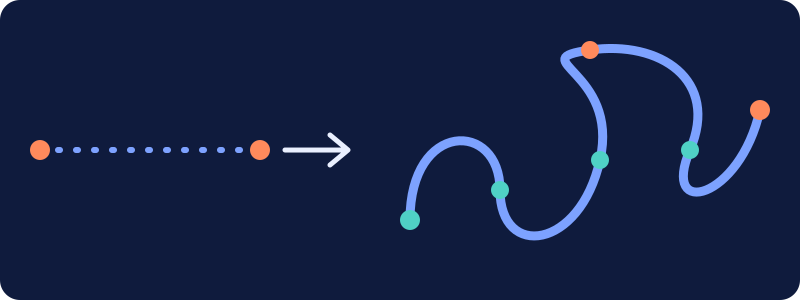

Boltz: AI that predicts protein shapes

Proteins are tiny machines that do almost everything in your body. Their shape decides what they do. Boltz is a family of open-source AI models, developed at MIT, that predict those shapes from a simple list of building blocks.
What is Boltz?
Boltz is an open-source AI model for predicting the three-dimensional structure of biological molecules. It comes from researchers at MIT, including the Jameel Clinic for Machine Learning in Health and CSAIL. The first model, Boltz-1, was released in late 2024. A follow-up, Boltz-2, arrived in 2025 and also estimates how strongly a small molecule binds to a protein.
Where to go next
- What is protein folding? Why a chain of amino acids becomes a working machine.
- The Boltz models Boltz-1, Boltz-2 and who built them.
- How it works Structure prediction in plain English.
- Why it matters What better predictions could change, and the limits.
- Learn more A searchable glossary and further reading.